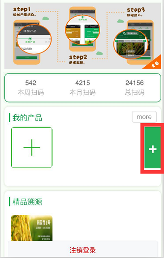
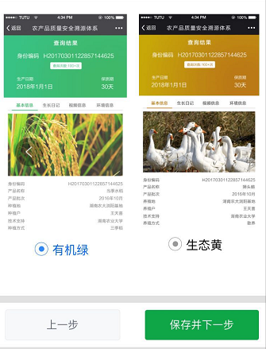
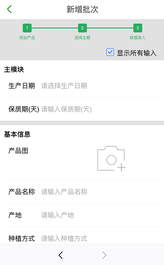
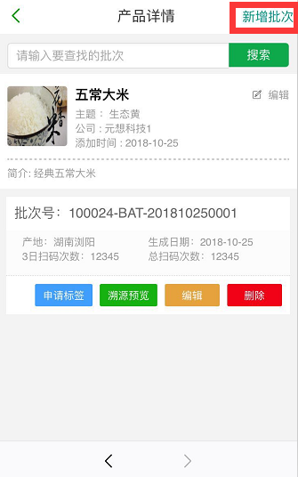
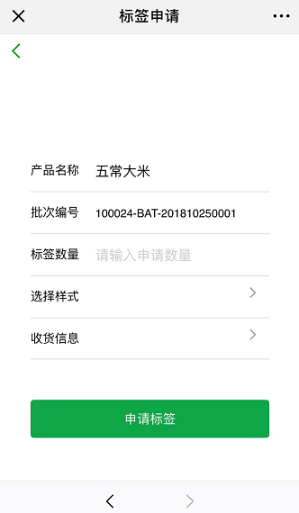

关注农科院信息所公共溯源平台微信公众号，使用农科院信息所溯源管理系统，仅需三步即可实现产品溯源。
第一步：添加产品
登录后，在首页“我的产品”模块中点击“+”即可添加一个产品，填入产品名称（必填）、产品简介、产品图片后，点击底部“保存并 下一步”按钮，进入第二步。

第二步：选择主题
选择一个适合本产品的溯源主题，选择完成后，点击底部“保存并下一步”按钮，进入最后一步。

第三步：新增批次
最后一步即输入需要溯源的产品批次的信息。每种产品都有不同的批次，每个批次的某些数据可能会有差别，比如：生产日期。以后再要添加此产品新的批次溯源信息，只需在首页或者产品列表页面选择产品，点击右上角的“新增批次”即可添加一个批次的溯源信息。

三步完成以后，即可得到此产品批次的溯源二维码，您可以将此二维码进行分享，任何人扫描此二维码都可以查询到溯源信息。
另外，也您也可以申请二维码的实物标签，填写申请数量、选择标签样式以及收货地址后，即可提交标签申请。提交申请后，工作人员会与您联系，确认后我们会将打印好的标签邮寄给您，收到标签后，您就可以将这些标签贴到产品的包装上面，任何购买您产品的客户都可以扫 描看到溯源信息。
